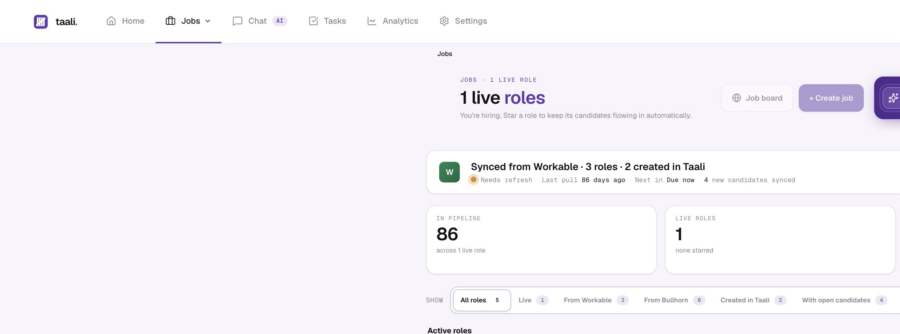
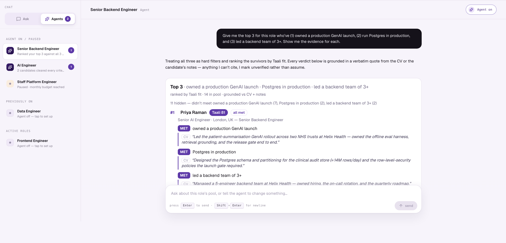

taali.
// 01 · For consultancy & staffing firms
Send clients proof, not CVs.
Taali is a hiring agent and an AI-native assessment — built from the ground up, proven running a live data & AI consultancy's hiring. It clears the AI-CV flood off your desks, lets you tailor a role and find the right people in seconds, and turns every candidate you put forward into verified, evidence-backed proof your clients can trust.
01 The agent runs your pipeline — you stay in control
02 Prove real skill, including how they work with AI
03 A service you can sell on to your clients
Sam Patel · Founder, Taali · piloted at DeepLight AI
taali.ai/demo · hello@taali.ai
// 01 · The flood
78%
Of CVs now contain AI-generated content.
ChatGPT averages 14 embellishments per CV, and resume fraud already costs employers ~$600B a year. Your consultants burn billable hours sorting a slush pile that looks qualified and isn't.
Jobcannon · Crosschq · Gartner
// 02 · The blindspot
5×
Cheating spike on legacy tech tests.
Your candidates build with Claude, Cursor and Copilot every day. Legacy tests measure leetcode in a sealed sandbox — one leader saw 80% use an LLM despite an explicit ban. You can't verify the dev, data and AI roles that are your bread and butter.
Karat · 500,000+ technical interviews
// 03 · The trust gap
1in 3
Hiring managers have caught a fake or proxy candidate.
When a client can no longer trust a CV, they can't trust your shortlist — and your edge as a firm erodes to whoever emails CVs fastest. Proof is the only thing left that travels.
Industry hiring surveys · 2025
01 · Volume
More
volume.
volume.
AI-tailored applications can be produced at scale. Strong candidates disappear inside manual triage, duplicated records, and inconsistent screening.
02 · Signal
Less
signal.
signal.
CVs are claims. Legacy tests ban or ignore AI, so they cannot show who can direct it, challenge it, verify it, and still deliver excellent work.
The new hiring stack needs both.Automation to run the funnel — and trustworthy evidence to make the decision.
01 · Agentic ATS
Create the role.
Receive the shortlist.
One agent per role processes applicants, removes duplicates, checks must-haves, scores and ranks, sends assessments, and brings the best people back for interview.
Role→Screen→Assess→Shortlist
02 · AI-native assessment
Observe the work.
Not the claims.
Candidates complete role-specific coding or knowledge work with AI. Taali captures the work trace — prompts, AI responses, file saves, validation runs and the final artifact — and turns it into an evidence-linked report.
Task→Work trace→Evidence→Verdict
The recruiter stays accountableSet policy and budget · approve consequential actions · inspect or override every recommendation
01 · You set the guardrails
Define what good looks like.
01Role brief and requirements
02Budget and score threshold
03Autonomy and approval gates
→
02 · Taali runs the loop
Work every application against the same policy.
01Ingest, parse and deduplicate applicants
02Pre-screen, score and rank with evidence
03Send the work sample and collect the trace
04Run safe actions; surface exceptions
→
03 · You stay accountable
Decide with the evidence in front of you.
01Approve, override or teach
02Inspect the evidence and policy path
03Move the shortlist to interview
Accountability by design
Every decision records its evidence, policy revision and outcome; consequential calls retain human disposition.
●taali.ai/jobs · agent on dutyProduct UI · representative data

The live agent bar shows what each role's agent advanced, escalated, or pre-screen rejected in the last hour.
Every role carries its own budget, autonomy dial & decisions feed — full autonomy on one, review-everything on the next.
Click into a role to see the pipeline the way your team will every morning.
●taali.ai/assess · candidate workspaceProduct UI · representative data

Claude at the centre, a real editor + sandboxed runtime alongside — we measure how they pair with AI, not whether they memorised syntax.
Prompts, AI responses, file saves and validation runs are captured for replay — the work trace is the record.
No proctoring overlay — no lockdown browser, no webcam. The work speaks for itself.
Every task battle-tested in a sandbox before a candidate sees it — authored from the role's JD, human-approved.
●taali.ai/candidate/:id · internal recruiter reportProduct UI · representative data

Recruiter-only by design: the tab appears once a completed assessment is linked to the candidate.
Expand the five Ds into graded rubric criteria, the work trace and final deliverable — inspectable, not a black box.
Client-safe links stay separate: detailed assessment scoring, recruiter notes and interview prep remain internal.
●taali.ai/chat · ask + per-role agentsProduct UI · representative data

"Top 3 who've owned a GenAI launch, run Postgres in prod, and led a backend team" → a grounded shortlist, every verdict backed by a verbatim CV quote.
Ask mode searches your whole pipeline; tool calls are visible — see what was queried, compare side-by-side, pull shortlists.
Agent mode is per-role: it finds, reasons over the evidence, and acts — invite to assessment, adjust the cut-off — within budget.
Standalone agentic ATS
Run the native path in Taali.
Role, careers page, public apply, screening, assessment and decision pipeline — available for the first standalone rollout.
Connected ATS
Keep the system you already use.
Workable is live. Bullhorn is shipped and available with onboarding; first customer activation is pending.
Both modes enter the same governed loop
01 · BRIEF
Create & publish
Turn a conversation into a role, requirements and a live Taali job page.
02 · VERIFY
Screen & assess
Parse CVs, grade role fit, apply explicit knockouts and send the AI-native work sample.
03 · GOVERN
Decide with control
Run safe on-policy actions; queue ambiguous, protected and off-policy calls for the team.
04 · HAND OFF
Share the evidence
Send a secure report and tailored interview pack to the hiring team or client.
Available now
Native hiring path through interview handoff · Workable live · Bullhorn available with onboarding.
To complete the all-in-one ATS
Calendar scheduling · offers / e-sign · direct job-board APIs · inbound candidate inbox / SMS.
↑ AI-native work sample
Bolts AI on ↓
Test vendors · adding AI features
HackerRank
CodeSignal
Codility · Karat
CodeSignal
Codility · Karat
Agent + AI-native + human-in-loop
TAALI
Typical legacy ATS / CRM
Bullhorn · Vincere
Workable · Greenhouse
Workable · Greenhouse
Agentic HR — adjacent
Eightfold
Paradox
Paradox
← Manual screening
Agentic loop →
What it does for hiring teams
Legacy ATS/CRM
Bullhorn / Workable Test vendors
HR / CodeSignal TAALI
Bullhorn / Workable Test vendors
HR / CodeSignal TAALI
Agent works each role from brief to evidence-backed shortlist
○○●
Verifies real skill on a real-repo task with AI
○◐●
Scores how candidates work with AI
○○●
Evidence-linked CV scoring with optional corroboration
○○●
Conversational intake + search — brief roles, find anyone
◐○●
Routes ambiguous and protected decisions to human review
◐○●
Evidence-linked, auditable verdict (FS-ready)
○○●
Runs standalone or connects through Workable, Bullhorn + API
◐○●
// Live · production · design-partner workspace
DeepLight AI · live design partner
An international data & AI consultancy using Taali on live technical hiring across data engineering, AI, cloud, product and governance roles.
Live · production
// Example role families in the workspace
Data EngineerAI EngineerGenAI EngineerAI/ML ArchitectSenior AWS Solutions ArchitectAI Product OwnerPlatform EngineerAI & Data Governance Consultant
// Founder-market fit
Built by Sam Patel — a data scientist with 10+ years hiring and growing data teams. He deployed Taali into the workflow he knew first-hand. The product path is operating on real roles and records.
// DeepLight workspace · audited 21 July 2026
112
Active roles in the workspace
63,535
Active application records
45,577
Active candidate profiles
23,771
Agent decisions recorded
8,084
Application records with a current full role-fit score
144
Advance recommendations recruiter-approved
19 scored candidates now sit at offer or hired stage in the connected ATS — observed downstream status, not a causation claim.
01
Recruitment & staffing firms
Place faster, with proof.
→The agent handles repetitive screening and evidence collation on each mandate — more capacity across live roles.
→Every submission can include a verified work sample and client-safe report — evidence clients can inspect.
→Your consultant owns the relationship and final call — Taali supplies the decision trail.
Faster screening · evidence-backed submissions
02
In-house hiring teams
Build your teams, with control.
→The agent handles repetitive top-of-funnel work for each active role — more recruiter capacity without lowering the bar.
→One candidate report brings CV, assessment and interview evidence together — one view for recruiters and hiring managers.
→Budgets, approval gates and overrides stay with your team — automation with accountable human decisions.
More capacity per recruiter · one auditable hiring bar
// How you pay
Credits — pay only for what you use. One usage-based model across your roles and workflows. No large upfront commitment; set a budget for each role.
// How to start — free
A no-cost proof-of-value pilot on a few live roles — for your own team, a client mandate, or both — or walk the live product first at taali.ai/demo. hello@taali.ai →
01Brief & attract
Available
Native role + public apply
Requisition, careers board, job page, screening questions and application intake are shipped; first standalone rollout pending.
Live
Workable
Imports roles and applicants; configured stage, note and assessment handoffs write back.
Available
Bullhorn
Connector shipped and available with onboarding: sync, status mapping and durable write-back. First customer activation pending.
02Screen
Live
Structured CV intake
Recruiter upload, native apply or ATS sync becomes structured work history, skills and education.
Live
Fast pre-screen score
Low-cost 0–100 triage surfaces obvious mismatches before full role-fit scoring.
Live
Evidence + knockouts
Must-haves are graded with evidence; explicit application questions can enforce deterministic knockouts.
03Rank & find
Live
Evidence-linked role fit
0–100 score with per-requirement grades and the CV evidence behind each judgment.
Live
Cited conversational search
Ask for a shortlist in plain English; qualitative matches carry verbatim CV citations.
Pilot
Optional corroboration
ATS history, GitHub and peer context can add questions; absence is neutral and never an auto-reject.
04Assess
Live
Repository + Claude workspace
Role-specific work in a network-disabled repo, editor and AI-assisted runtime.
Live
Inspectable work trace
Prompts, AI responses, file saves, validation runs and the final artifact are time-stamped.
Live
The 4 Ds + Deliverable
Flagship tasks score all five dimensions; the pattern is rolling across the wider catalogue.
05Decide
Live
Decision Hub
Ambiguous, off-policy and protected decisions queue with evidence; safe configured actions can run automatically.
Live
Revisioned policy
Deterministic verdicts carry a readable rule path and policy revision.
Live
Feedback proposals
Recruiter corrections can inform a reviewable policy revision; safe auto-apply is opt-in.
06Share & operate
Live
Internal + client reports
Secure expiring links and PDF output, with detailed assessment evidence kept internal.
Live
Tailored interview pack
Candidate-specific questions grounded in the role, CV and assessment evidence.
Live
Team, analytics + controls
Per-role hiring teams, audit trail, analytics, AI credits, usage ledger and role budgets.
Full-ATS
gaps →
gaps →
NextInterview coordinationCalendar scheduling plus an inbound candidate inbox and SMS.
NextNative offersOffer approvals, documents and e-signature inside Taali.
NextDirect acquisitionJob-board posting APIs and automated external discovery.
Live production path
Shipped · enable / onboard
Controlled pilot
Next
Native path is available through interview handoff.